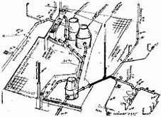
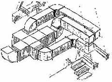
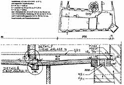
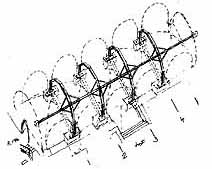
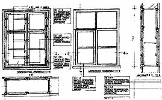
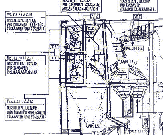
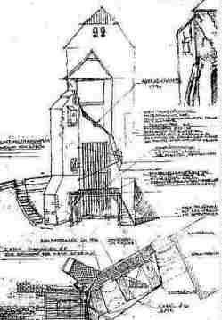
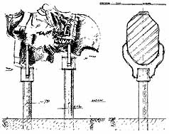

EnEV-Befreiung gem. § 25 (17 alt)!
EnEV-Befreiung gem. § 25 (17 alt)!
In Unterseiten aufgeteilt: 1:
Einleitung:1.1 1.2 1.3 1.4 Der Krieg gegen die
Bausubstanz:1.5 1.6 1.7 1.8 1.9 1.10 1.11
Kapitel 1: Projektentwicklung:1.12
Kapitel 2: Bauvorbereitung1.13 1.14
Kapitel 3: Funktions-, Entwurfs-, Ausführungs- und Kostenplanung:1.15
Kapitel 4: Konstruktionsplanung:1.16
Haustechnikplanung:1.17
Altbaugeeignete Reparaturverfahren und
Alternativen zu zerstörerischen Sanierverfahren 1 2.2
Kapitel 5: Maßnahmen- und Kostenplanung
Kapitel 6: Bauablauf
Kapitel 7: Planungsvoraussetzungen
Grundlagen der Konstruktions- bzw. Ausführungsplanung sind das Aufmaß, die technische Bestandsaufnahme und die Bemusterung geeigneter Reparaturtechnik. Hier zeigt sich die Schwäche von praxisfremden Aufmaßtrupps am meisten. Sie können die spätere Verwertung der Bestandspläne nicht richtig vorhersehen und liefern entsprechend unvollständige, fehlerhafte oder unnötige Ergebnisse. Ein planungsverantwortlicher Ingenieur kann vor und während der Bestandsaufnahme auf den technischen Bedarf reagieren und Nachbearbeitungsbedarf in der Planungsphase rechtzeitig ausschließen. Nur er erkennt die konstruktiven Schwachpunkte, aus denen sich besondere Anforderungen an Bestandsverträglichkeit, den Bauteil- und Arbeitsschutz ableiten. Das denkmalpflegerische Erhaltungsanliegen und die Baustellenverordnung setzen hier den Maßstab. Auch die Schutzmaßnahmen für erhaltenswerte Bauteile im Bauablauf wollen hier geplant sein.
Die aus der Bestandsaufnahme und dem Schadensbild abgeleitete Planungsdetaillierung sollte den Anforderungen einer kostensicheren Ausschreibung und Vergabe entsprechen. Sonst war alles Gegurke umsonst. Wenn auch erst mal billig.


Weißenfels-Geleitshaus: Isometrische Abwasserkanal-Planung im BestandDabei ist anzumerken, daß die angebliche Energiespartechnik auf der Grundlage sog. alternativer Energien bisher nirgends bewiesen hat, daß damit auch nur ein Kilowatt gespart wurde. Im Gegenteil: Ihre geringe Energiedichte macht "das Sammeln" teuer, das Ökoargument ist Augenauswischerei und dient anderen Interessen.
Vorsicht vor Haustechnikplanern, die normengestützte Luxuskonstruktionen mit allem modernistischem Firlefanz vorzuschlagen, um daraus Honorarkapital zu schlagen. Das gelingt auch deshalb so gut, da die Anlagenhersteller neben fetten Brotzeitpaketen nicht selten noch alle Pläne und Leistungsbeschreibungen (für den Haustechnik-Fachplaner!) 'kostenlos' zur Verfügung stellen. Gerade bei der Heiz- und Klimatechnik werden so altbauschädigende teure Luftbehandlungssysteme gegenüber sinnvollen Alternativen wie der Hüllflächentemperierung bevorzugt. Die Detailplanung im Bestand wird jedoch systematisch vergessen. Dem Bauwerk und dem Bauherrn dient das keinesfalls. Um der Bestechung des Fachplaners vorzubeugen, wäre es sinnvoll, wenn zumindest der private Bauherr höchstpersönlich entscheidet, ob er seine Heizung von diesem oder jenem Hersteller will um dann dem Planer seine möglichst eigenständig getroffenen Gestaltungs- und / oder Technikentscheidung vorzugeben. Entscheiden kann nämlich auch dem Bauherren Spaß machen.
Vorsicht aber auch vor dem Wasserwerk Ihrer Kommune: Hier wird deutschlandweit gerne brutaler Beschiß zu Lasten der Kunden und
zugunsten der Gebührenabzocke für Wasser und Abwasser geübt:
Wußten Sie, daß gerne eine falsche, d.h. gesetzwidrig zu große Wasseruhr montiert wird, die trotz Eichung brutal mehr
Wasserverbrauch zählt, als entnommen wird? Die Typen: "Qn 2,5" für 1-50 Abnehmer/Wohnungen, "Qn 6" für bis zu 350
Abnehmer/Wohnungen, "Qn 10" für bis zu 960 Abnehmer/Wohnungen. Die Typenbezeichnung findet sich auf der Zählerscheibe. Je
größer, umso größer wird der Meßfehler auf Rechnung des Verbrauchers, der schnell Werte von 20 Prozent
übersteigen kann. Vor allem bei der Zählung kleiner Entnahmemengen. Und unnötig große Uhren kosten auch sinnlos mehr.
Also Prüfen! Details:

Weißenfels-Geleitshaus: Isometrische Anlagenplanung Lüftung im historischen Dachgespärre
Weißenfels-Geleitshaus: Deckenverstärkung mit Stahlträger - verformungsgetreu
Neuenburg-Weinmuseum: Substanzschonende Gewölbeertüchtigung durch bestandsgenau eingepaßte Stahlbinderkonstruktion. Es macht schon Sinn, architektonischen Denkmalverstand auch in der Tragwerksplanung freien Raum zu geben und die Fachplanungen "im Paket" zu erbringen. Und bringt dem Bauherrn nicht nur technische, sondern eben auch wirtschaftliche Vorteile.
Reparaturplanung für historisches Fenster und ...

Neuenburg-Westtorhaus: Bauvorbereitende Sicherung absturzgefährdeter Fassadenbauteile durch Rundholzverbau. Nachfolgende Wandsicherung durch kostengünstigen und bestandsschonenden "reversiblen" Mauerpfeiler.Technisch unsichere Planer haben davor aber Angst. Selbstverständlich schmilzt durch "einfaches" Bauen "- ohne Gürtel und Hosenträger" - auch das baukostenabhängige Planungshonorar dahin. Die zusätzliche Anstrengung für substanzerhaltendes und damit kostengünstiges Bauen wird aber durch technisch/gestalterisch und damit auch wirtschaftlich mitverwendete Bausubstanz honorabel. Dafür sieht die bestens altbaugeeignete Honorarordnung Regelungen (z. B.: HOAI §§ 10.3a - mitverarbeitete Bausubstanz und 15.4 - Schutz vorhandener Substanz) vor. Zusätzlich zu den bekannten Zuschlägen für Umbau, Modernisierung, Instandsetzung/-haltung und den zutreffenden Honorarzonen und -sätzen, die auch bei totaler Altbauverwüstung greifen. Und die auch Gebäude- und Fachplaner gerne einsacken, selbst wenn sie weder qualifizierte Kostenermittlungen noch VOB-gerechte Leistungsbeschreibungen auf Grundlage entsprechender Detailklärungen liefern (können).
Deswegen macht es durchaus Sinn, wenn ein Gebäudeplaner in seinem Büro auch die Tragwerksplanung (Statik) und Haustechnikplanung überwiegend mit erledigt (Variante, die echtes Geld spart - dem Planer und dem Bauherrn). Externe Spezialisten braucht es dann nur noch für Spezialfragen. So kann es gelingen, daß die kostensparenden Grundsätze der relativen Statik angewendet werden:
- Tragwerksplanung nur nach klarer Bestandsanalyse auf Schadensursache und Mitverwendbarkeit -
(Freilegung, Konstruktionsprobebelastung, Lastüberlagerungszeichnung, Rißkartierung,
Verformungsgetreues Aufmaß nach Erfordernis)
- Sicherung des originalen Tragsystems durch sparsame Reparatur der defekten Teile im erforderlichen Umfang,
- damit relative Erhöhung der Standsicherheit zum (stehengebliebenen!) Bestand,
- baustoffsichere und deswegen dauerstabile Konstruktionsgestaltung im Respekt vor Bestand,
- Beratung zur Bauwerksnutzung unter wirtschaftlich-technischer Berücksichtigung der Bestandstragfähigkeit,
- Durchsetzen von Ausnahmen gem. EnEV, giftigem Holzschutz und anderen "Bauvorschriften",
- kein kostentreibendes Festkleben an Normen, sondern konstruktive Suche nach gleichwertigen, aber
wirtschaftlicheren und bestandsverträglicheren Lösungen,
- streßfreie Integration der Gebäudeplanung und Haustechnik in der Tragwerksplanung,
- inkl. rechnerischer / prüffähiger Standsicherheitsnachweis,
- nicht unbedingt formalistisch-normenhörige Heranführung und Veränderung der Altkonstruktion an
neue DIN,
- leistungsgerechte Vertragsgestaltung auch hinsichtlich Ausnahmen/Befreiungsbedarf
- echt notwendige Ergänzungen an unterdimensionierten, falschen Altkonstruktionen nicht
ausgeschlossen und vor allem:
- inkl. echt VOB/A-getreuer Leistungsbeschreibung mit zeichnerischer und textlicher Klärung aller statisch
verursachten Bauleistungen in den betroffenen Baugewerken als vertragsgerecht erfüllte
Planungsgrundleistung - offenbar ein Ding der Unmöglichkeit für alle Statiker mit Knopfdruckplanung und Stücklistenlieferung.

Neuenburg-Hofgestaltung: Sonderplanung - Bronzefuß für Skulpturenfragment .
.